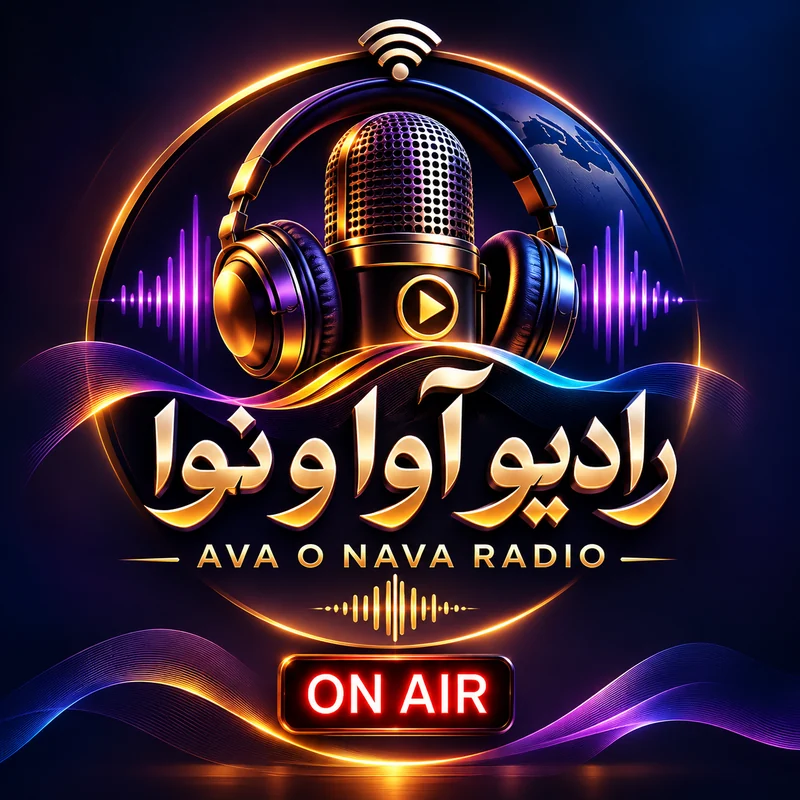

<!doctype html>
<html lang="fa" dir="rtl">
<meta charset="utf-8">
<meta name="viewport" content="width=device-width,initial-scale=1">
<meta name="robots" content="noindex">
<title>نمونهٔ پلیر | آوا و نوا</title>
<link rel="stylesheet" href="https://fonts.googleapis.com/css2?family=Vazirmatn:wght@400;500;700&display=swap">
<style>
  * { box-sizing: border-box; }
  body { margin: 0; color-scheme: dark; background: #110d17; color: #faf1e8; font: 1rem/1.65 Vazirmatn, Tahoma, sans-serif; }
  main { width: min(100%, 540px); margin: clamp(56px, 16vh, 150px) auto; padding: 0 14px; }
  .card { background: linear-gradient(125deg,#342137,#201923 65%); border: 1px solid #654860; border-radius: 22px; padding: 18px 18px 0; box-shadow: 0 12px 38px #08060c55; }
  .row { display: grid; grid-template-columns: clamp(54px,15vw,75px) 1fr 48px; align-items: center; gap: 12px; padding-bottom: 18px; }
  img { display: block; width: 100%; border-radius: 14px; }
  h1 { font-size: clamp(17px,4.8vw,24px); margin: 1px 0; line-height: 1.5; }
  p { margin: 0; }
  .meta, #stats { color: #d3c1ce; font-size: .83rem; }
  #state { color: #f2cc90; font-size: .77rem; }
  button, summary { font: inherit; cursor: pointer; }
  button { color: inherit; }
  #play { width: 48px; height: 48px; border: 0; border-radius: 50%; background: linear-gradient(140deg,#ffe5ad,#e6b36c); color: #29192c; display: grid; place-items: center; }
  #play::before { content: ""; border-block: 8px solid transparent; border-left: 13px solid currentColor; margin-left: 3px; }
  #play[aria-pressed="true"]::before { border: 0; width: 13px; height: 13px; margin: 0; border-radius: 2px; background: currentColor; }
  details { border-top: 1px solid #6a506657; }
  summary { display: flex; align-items: center; justify-content: space-between; list-style: none; min-height: 48px; }
  summary::-webkit-details-marker { display: none; }
  summary::after { content: ""; width: 8px; height: 8px; border: solid #edc88e; border-width: 0 2px 2px 0; transform: rotate(45deg); margin-inline: 5px; }
  details[open] summary::after { transform: rotate(225deg); }
  .tools { display: flex; flex-wrap: wrap; gap: 8px; margin-bottom: 10px; }
  .tools button { border: 1px solid #665365; background: #302433; padding: 7px 13px; min-height: 44px; border-radius: 10px; font-size: .85rem; }
  #stats { padding-bottom: 14px; }
  :focus-visible { outline: 2px solid #f4cf90; outline-offset: 3px; }
  .card.expanded, .card:fullscreen { position: fixed; inset: 0; z-index: 1; border-radius: 0; display: flex; flex-direction: column; justify-content: center; padding: max(20px,5vw); }
  .expanded .row { grid-template-columns: minmax(64px,100px) 1fr 48px; }
</style>
<main>
  <section class="card" aria-labelledby="title">
    <div class="row">
      
      <div><p id="state" role="status">رادیو اینترنتی</p><h1 id="title">آوا و نوا با آرش</h1><p class="meta">موسیقی، شعر و آواز</p></div>
      <button id="play" type="button" aria-label="شنیدن پخش زنده" aria-pressed="false"></button>
    </div>
    <details>
      <summary>بیشتر</summary>
      <div class="tools"><button id="share">اشتراک‌گذاری</button><button id="expand">تمام‌صفحه</button></div>
      <p id="stats" role="status">آمار شنوندگان</p>
      <p id="notice" role="status"></p>
    </details>
  </section>
  <audio preload="none" playsinline></audio>
</main>
<script>
  const audio = document.querySelector('audio');
  const play = document.querySelector('#play');
  const card = document.querySelector('.card');
  const expand = document.querySelector('#expand');
  const details = document.querySelector('details');
  const state = document.querySelector('#state');
  function stop(message) {
    audio.pause();
    audio.removeAttribute('src');
    audio.load();
    play.setAttribute('aria-pressed', 'false');
    play.setAttribute('aria-label', 'شنیدن پخش زنده');
    state.textContent = message;
  }
  play.onclick = async () => {
    if (audio.hasAttribute('src')) return stop('پخش متوقف شد');
    audio.src = 'https://live.ibboabdoli.com/stream';
    play.setAttribute('aria-pressed', 'true');
    play.setAttribute('aria-label', 'توقف');
    state.textContent = 'در حال اتصال…';
    try { await audio.play(); } catch (error) {
      if (error.name !== 'AbortError' && audio.hasAttribute('src')) stop('اتصال برقرار نشد؛ دوباره امتحان کن');
    }
  };
  audio.onplaying = () => { state.textContent = 'در حال پخش'; };
  audio.onwaiting = () => { if (audio.hasAttribute('src')) state.textContent = 'در حال دریافت صدا…'; };
  audio.onended = () => stop('پخش پایان یافت');
  audio.onerror = () => { if (audio.hasAttribute('src')) stop('پخش در دسترس نیست'); };
  function setExpanded(active) {
    card.classList.toggle('expanded', active);
    expand.textContent = active ? 'خروج از تمام‌صفحه' : 'تمام‌صفحه';
  }
  expand.onclick = async () => {
    if (document.fullscreenElement) return document.exitFullscreen();
    if (card.classList.contains('expanded')) return setExpanded(false);
    if (card.requestFullscreen) {
      try { await card.requestFullscreen(); return; } catch {}
    }
    setExpanded(true);
  };
  document.onfullscreenchange = () => setExpanded(!!document.fullscreenElement);
  document.addEventListener('keydown', event => {
    if (event.key === 'Escape' && !document.fullscreenElement) setExpanded(false);
  });
  document.querySelector('#share').onclick = async () => {
    const url = 'https://radio.ibboabdoli.com/v2/';
    const notice = document.querySelector('#notice');
    try {
      if (navigator.share) await navigator.share({ title: 'رادیو آوا و نوا', url });
      else { await navigator.clipboard.writeText(url); notice.textContent = 'لینک رادیو کپی شد.'; }
    } catch (error) { if (error.name !== 'AbortError') notice.textContent = url; }
  };
  details.ontoggle = async () => {
    if (!details.open) return;
    const stats = document.querySelector('#stats');
    stats.textContent = 'در حال دریافت آمار…';
    try {
      const response = await fetch('https://live.ibboabdoli.com/radio-stats.xsl', {cache: 'no-store', signal: AbortSignal.timeout(5000)});
      if (!response.ok) throw Error();
      const data = await response.json();
      if (typeof data.live !== 'boolean' || !Number.isInteger(Number(data.listeners))) throw Error();
      stats.textContent = data.live ? 'شنوندگان آنلاین: ' + Number(data.listeners).toLocaleString('fa-IR') : 'رادیو اکنون روی آنتن نیست.';
    } catch { stats.textContent = 'آمار شنوندگان در دسترس نیست.'; }
  };
</script>
</html>
